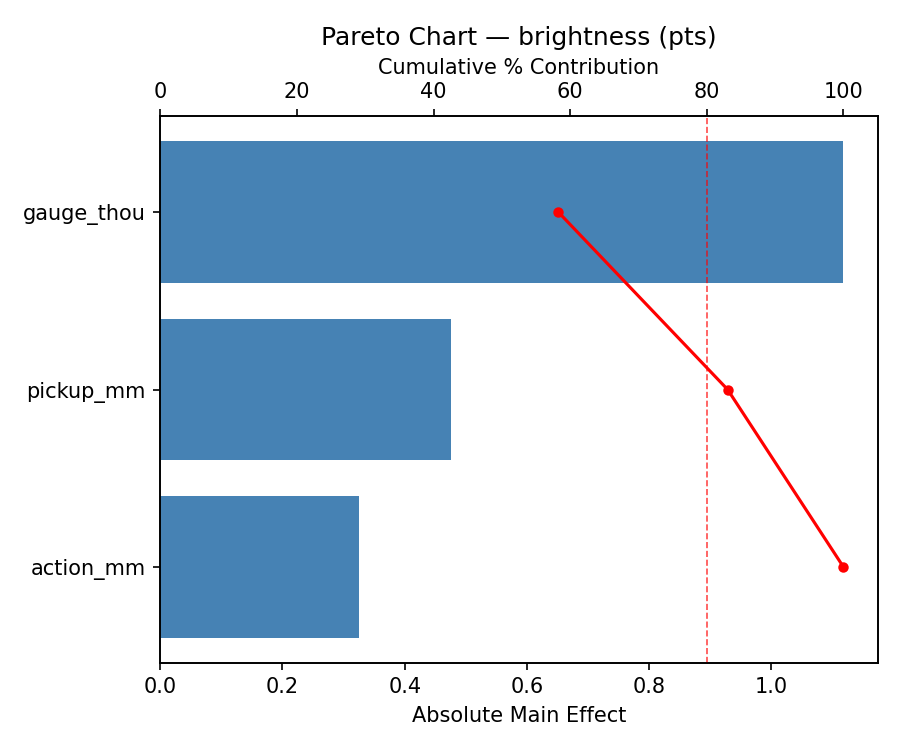
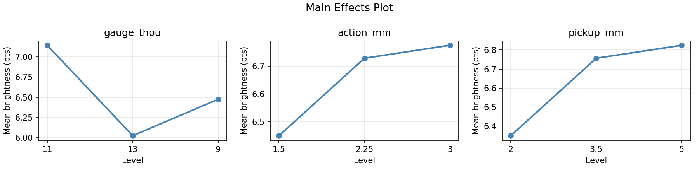
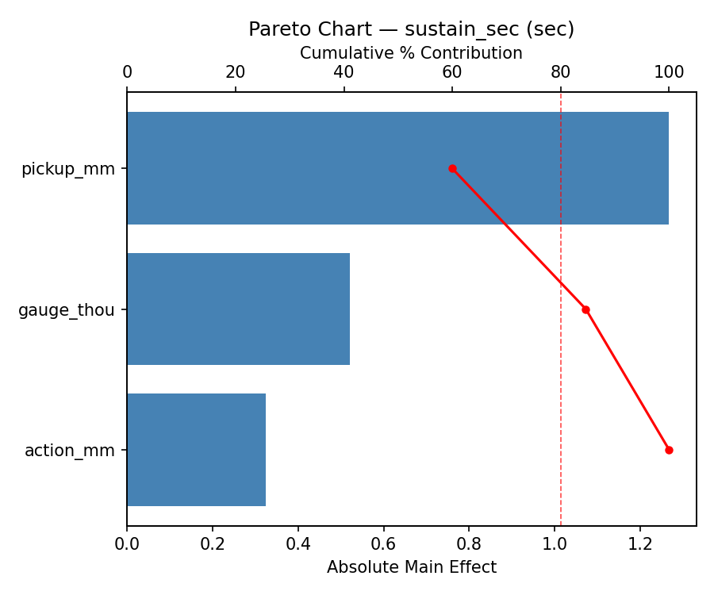
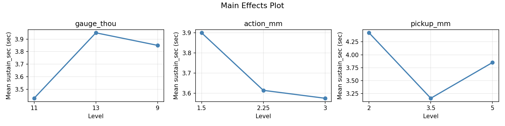
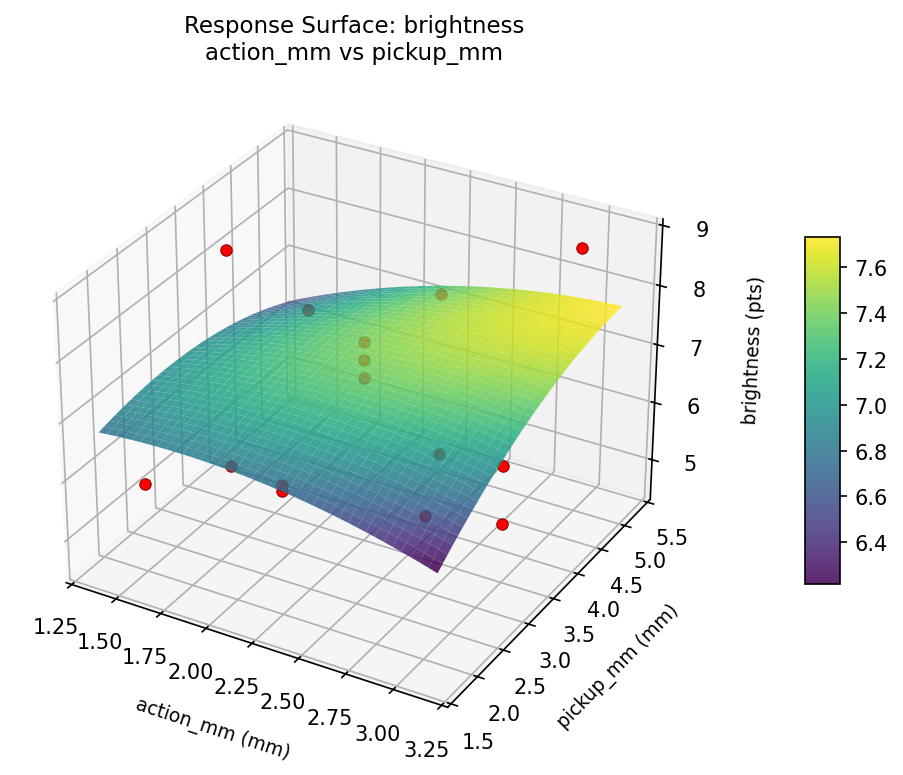
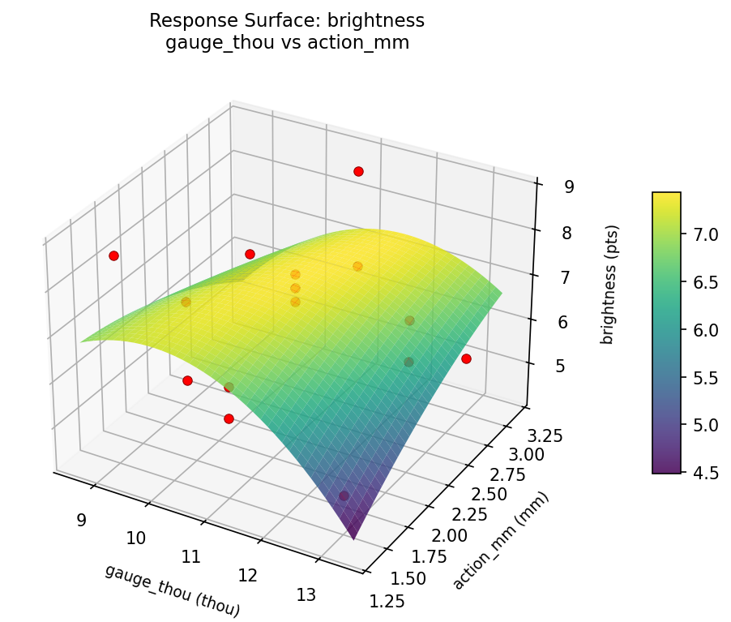
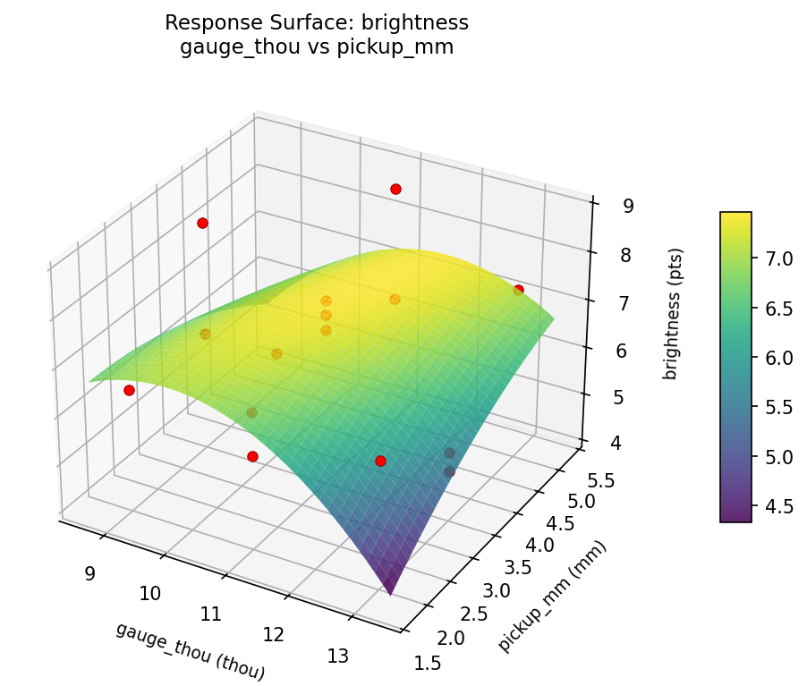
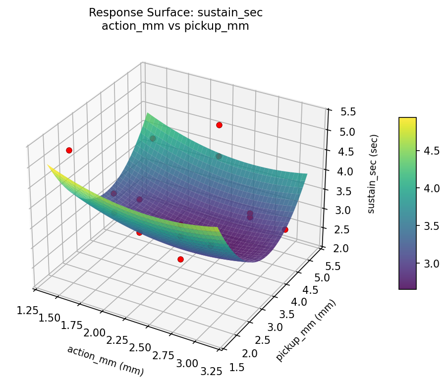
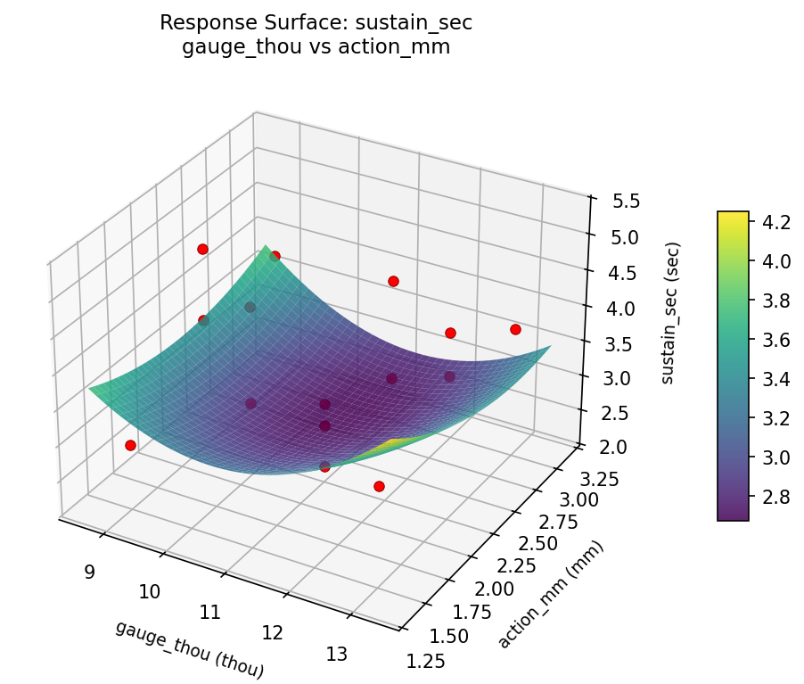
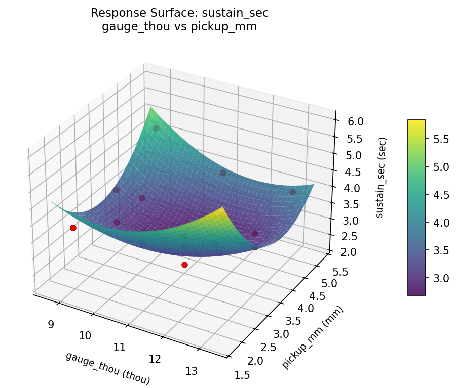

Experimental Setup
Factors
| Factor | Low | High | Unit |
|---|
gauge_thou | 9 | 13 | thou |
action_mm | 1.5 | 3.0 | mm |
pickup_mm | 2 | 5 | mm |
Fixed: guitar_type = solid_body, tuning = standard
Responses
| Response | Direction | Unit |
|---|
brightness | ↑ maximize | pts |
sustain_sec | ↑ maximize | sec |
Configuration
{
"metadata": {
"name": "Guitar String Tone Optimization",
"description": "Box-Behnken design to maximize brightness and sustain by tuning string gauge, action height, and pickup height"
},
"factors": [
{
"name": "gauge_thou",
"levels": [
"9",
"13"
],
"type": "continuous",
"unit": "thou"
},
{
"name": "action_mm",
"levels": [
"1.5",
"3.0"
],
"type": "continuous",
"unit": "mm"
},
{
"name": "pickup_mm",
"levels": [
"2",
"5"
],
"type": "continuous",
"unit": "mm"
}
],
"fixed_factors": {
"guitar_type": "solid_body",
"tuning": "standard"
},
"responses": [
{
"name": "brightness",
"optimize": "maximize",
"unit": "pts"
},
{
"name": "sustain_sec",
"optimize": "maximize",
"unit": "sec"
}
],
"settings": {
"operation": "box_behnken",
"test_script": "use_cases/157_guitar_string_tone/sim.sh"
}
}
Experimental Matrix
The Box-Behnken Design produces 15 runs. Each row is one experiment with specific factor settings.
| Run | gauge_thou | action_mm | pickup_mm |
|---|
| 1 | 11 | 1.5 | 2 |
| 2 | 11 | 2.25 | 3.5 |
| 3 | 13 | 2.25 | 5 |
| 4 | 13 | 2.25 | 2 |
| 5 | 11 | 2.25 | 3.5 |
| 6 | 11 | 2.25 | 3.5 |
| 7 | 9 | 2.25 | 5 |
| 8 | 13 | 1.5 | 3.5 |
| 9 | 11 | 1.5 | 5 |
| 10 | 13 | 3 | 3.5 |
| 11 | 9 | 2.25 | 2 |
| 12 | 11 | 3 | 5 |
| 13 | 9 | 1.5 | 3.5 |
| 14 | 9 | 3 | 3.5 |
| 15 | 11 | 3 | 2 |
Step-by-Step Workflow
1
Preview the design
$ python doe.py info --config use_cases/157_guitar_string_tone/config.json
2
Generate the runner script
$ python doe.py generate --config use_cases/157_guitar_string_tone/config.json \
--output use_cases/157_guitar_string_tone/results/run.sh --seed 42
3
Execute the experiments
$ bash use_cases/157_guitar_string_tone/results/run.sh
4
Analyze results
$ python doe.py analyze --config use_cases/157_guitar_string_tone/config.json
5
Get optimization recommendations
$ python doe.py optimize --config use_cases/157_guitar_string_tone/config.json
6
Generate the HTML report
$ python doe.py report --config use_cases/157_guitar_string_tone/config.json \
--output use_cases/157_guitar_string_tone/results/report.html
Features Exercised
| Feature | Value |
|---|
| Design type | box_behnken |
| Factor types | continuous (all 3) |
| Arg style | double-dash |
| Responses | 2 (brightness ↑, sustain_sec ↑) |
| Total runs | 15 |
Analysis Results
Generated from actual experiment runs using the DOE Helper Tool.
Response: brightness
Top factors: gauge_thou (58.3%), pickup_mm (24.8%), action_mm (16.9%).
Pareto Chart

Main Effects Plot

Response: sustain_sec
Top factors: pickup_mm (60.0%), gauge_thou (24.7%), action_mm (15.4%).
Pareto Chart

Main Effects Plot

Response Surface Plots
3D surfaces fitted with quadratic RSM. Red dots are observed data points.
brightness action mm vs pickup mm

brightness gauge thou vs action mm

brightness gauge thou vs pickup mm

sustain sec action mm vs pickup mm

sustain sec gauge thou vs action mm

sustain sec gauge thou vs pickup mm

Full Analysis Output
RSM surface: rsm_brightness_gauge_thou_vs_action_mm.png
RSM surface: rsm_brightness_gauge_thou_vs_pickup_mm.png
RSM surface: rsm_brightness_action_mm_vs_pickup_mm.png
RSM surface: rsm_sustain_sec_gauge_thou_vs_action_mm.png
RSM surface: rsm_sustain_sec_gauge_thou_vs_pickup_mm.png
RSM surface: rsm_sustain_sec_action_mm_vs_pickup_mm.png
=== Main Effects: brightness ===
Factor Effect Std Error % Contribution
--------------------------------------------------------------
gauge_thou 1.1179 0.3154 58.3%
pickup_mm 0.4750 0.3154 24.8%
action_mm 0.3250 0.3154 16.9%
=== Summary Statistics: brightness ===
gauge_thou:
Level N Mean Std Min Max
------------------------------------------------------------
11 7 7.1429 0.9607 5.8000 8.8000
13 4 6.0250 1.1413 4.9000 7.4000
9 4 6.4750 1.6399 4.6000 8.6000
action_mm:
Level N Mean Std Min Max
------------------------------------------------------------
1.5 4 6.4500 1.5759 4.9000 8.6000
2.25 7 6.7286 1.0547 4.6000 7.7000
3 4 6.7750 1.4728 5.3000 8.8000
pickup_mm:
Level N Mean Std Min Max
------------------------------------------------------------
2 4 6.3500 0.3873 5.8000 6.7000
3.5 7 6.7571 1.3290 4.9000 8.6000
5 4 6.8250 1.7595 4.6000 8.8000
=== Main Effects: sustain_sec ===
Factor Effect Std Error % Contribution
--------------------------------------------------------------
pickup_mm 1.2679 0.2211 60.0%
gauge_thou 0.5214 0.2211 24.7%
action_mm 0.3250 0.2211 15.4%
=== Summary Statistics: sustain_sec ===
gauge_thou:
Level N Mean Std Min Max
------------------------------------------------------------
11 7 3.4286 1.0688 2.2000 5.3000
13 4 3.9500 0.5000 3.4000 4.6000
9 4 3.8500 0.7767 2.9000 4.8000
action_mm:
Level N Mean Std Min Max
------------------------------------------------------------
1.5 4 3.9000 1.0360 2.9000 5.3000
2.25 7 3.6143 0.9564 2.2000 4.8000
3 4 3.5750 0.6551 2.6000 4.0000
pickup_mm:
Level N Mean Std Min Max
------------------------------------------------------------
2 4 4.4250 0.6752 3.8000 5.3000
3.5 7 3.1571 0.5968 2.2000 3.9000
5 4 3.8500 0.9147 2.6000 4.8000
Pareto chart (brightness): use_cases/157_guitar_string_tone/results/analysis/pareto_brightness.png
Pareto chart (sustain_sec): use_cases/157_guitar_string_tone/results/analysis/pareto_sustain_sec.png
Main effects (brightness): use_cases/157_guitar_string_tone/results/analysis/main_effects_brightness.png
Main effects (sustain_sec): use_cases/157_guitar_string_tone/results/analysis/main_effects_sustain_sec.png
Optimization Recommendations
=== Optimization: brightness ===
Direction: maximize
Best observed run: #11
gauge_thou = 11
action_mm = 2.25
pickup_mm = 3.5
Value: 8.8
RSM Model (linear, R² = 0.0567, Adj R² = -0.2005):
Coefficients:
intercept +6.6667
gauge_thou +0.1000
action_mm -0.3500
pickup_mm -0.1250
RSM Model (quadratic, R² = 0.6441, Adj R² = 0.0034):
Coefficients:
intercept +7.5667
gauge_thou +0.1000
action_mm -0.3500
pickup_mm -0.1250
gauge_thou*action_mm +0.1750
gauge_thou*pickup_mm -0.6750
action_mm*pickup_mm +0.6250
gauge_thou^2 +0.1542
action_mm^2 -0.3458
pickup_mm^2 -1.4958
Curvature analysis:
pickup_mm coef=-1.4958 concave (has a maximum)
action_mm coef=-0.3458 concave (has a maximum)
gauge_thou coef=+0.1542 convex (has a minimum)
Notable interactions:
gauge_thou*pickup_mm coef=-0.6750 (antagonistic)
action_mm*pickup_mm coef=+0.6250 (synergistic)
Predicted optimum (from quadratic model):
gauge_thou = 9
action_mm = 1.5
pickup_mm = 3.5
Predicted value: 7.8000
Model quality: Moderate fit — use predictions directionally, not precisely.
Factor importance:
1. pickup_mm (effect: 1.6, contribution: 59.7%)
2. action_mm (effect: 0.7, contribution: 26.0%)
3. gauge_thou (effect: 0.4, contribution: 14.3%)
=== Optimization: sustain_sec ===
Direction: maximize
Best observed run: #10
gauge_thou = 9
action_mm = 3
pickup_mm = 3.5
Value: 5.3
RSM Model (linear, R² = 0.0621, Adj R² = -0.1937):
Coefficients:
intercept +3.6800
gauge_thou -0.2375
action_mm +0.1250
pickup_mm -0.0875
RSM Model (quadratic, R² = 0.5344, Adj R² = -0.3037):
Coefficients:
intercept +3.5333
gauge_thou -0.2375
action_mm +0.1250
pickup_mm -0.0875
gauge_thou*action_mm -0.7250
gauge_thou*pickup_mm +0.6500
action_mm*pickup_mm +0.1250
gauge_thou^2 +0.0833
action_mm^2 -0.2417
pickup_mm^2 +0.4333
Curvature analysis:
pickup_mm coef=+0.4333 convex (has a minimum)
action_mm coef=-0.2417 concave (has a maximum)
gauge_thou coef=+0.0833 negligible curvature
Notable interactions:
gauge_thou*action_mm coef=-0.7250 (antagonistic)
gauge_thou*pickup_mm coef=+0.6500 (synergistic)
Predicted optimum (from linear model):
gauge_thou = 9
action_mm = 3
pickup_mm = 3.5
Predicted value: 4.0425
Model quality: Weak fit — consider adding center points or using a different design.
Factor importance:
1. pickup_mm (effect: 0.5, contribution: 37.7%)
2. gauge_thou (effect: 0.5, contribution: 33.7%)
3. action_mm (effect: 0.4, contribution: 28.6%)